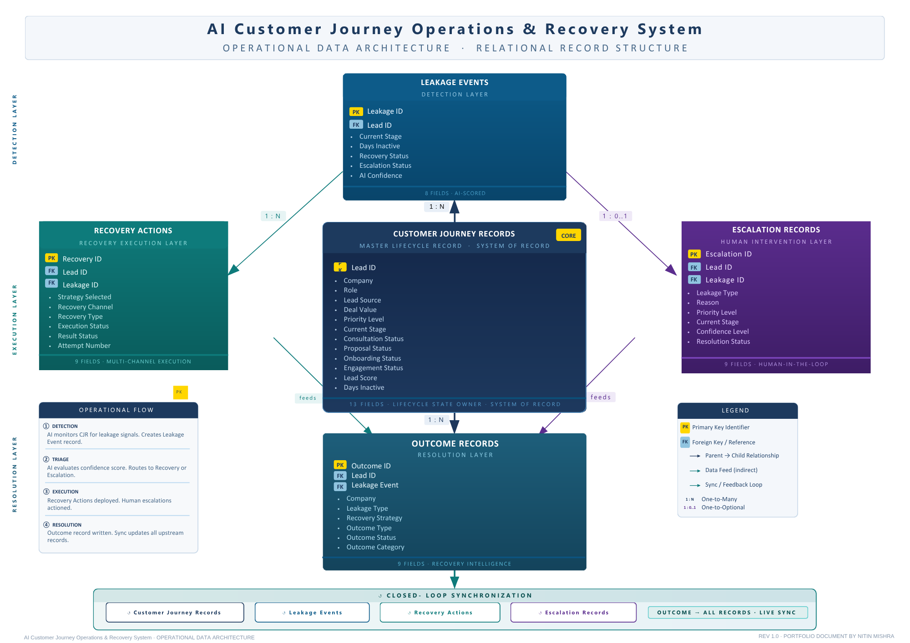
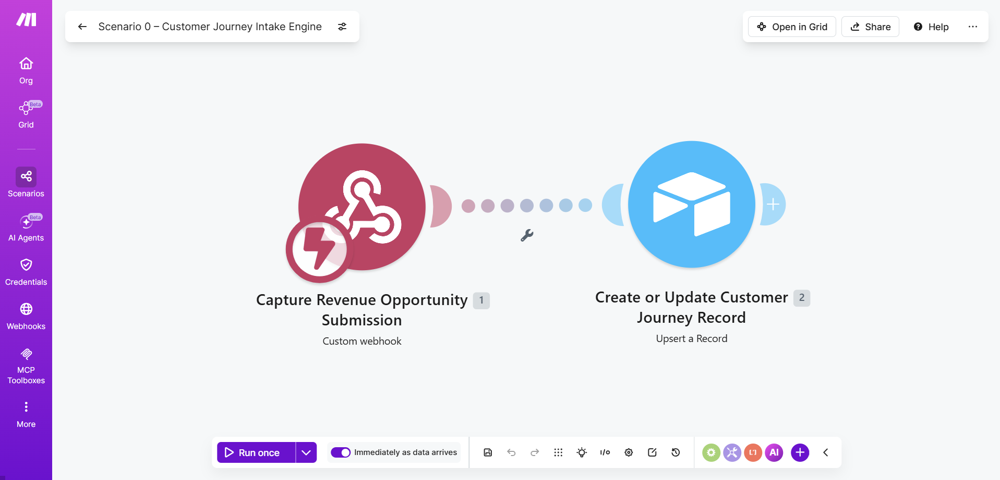
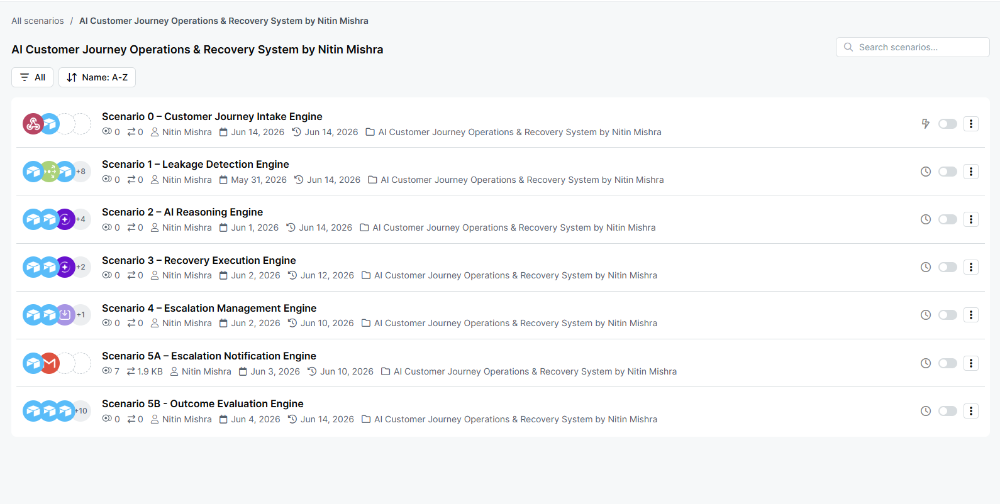
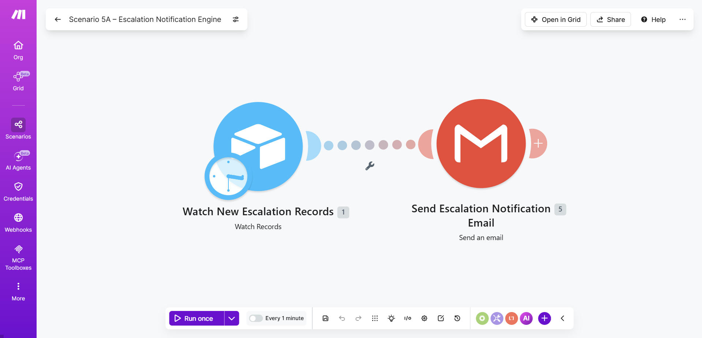
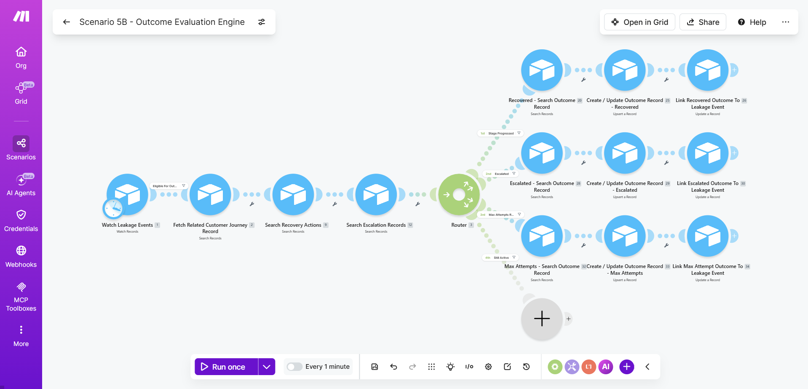
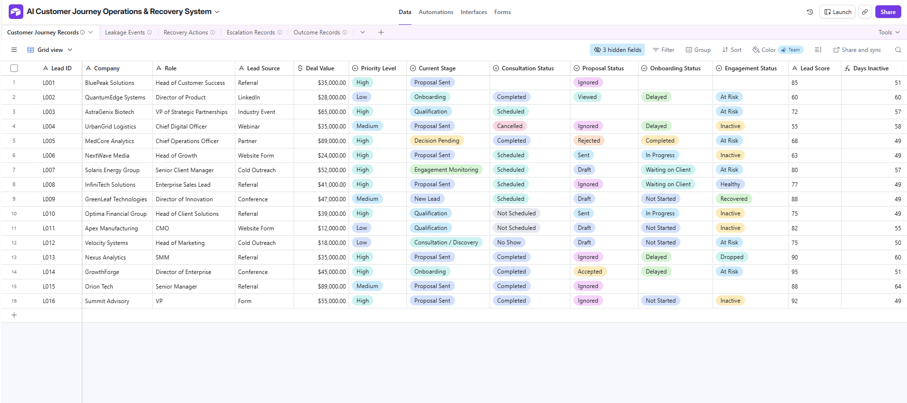
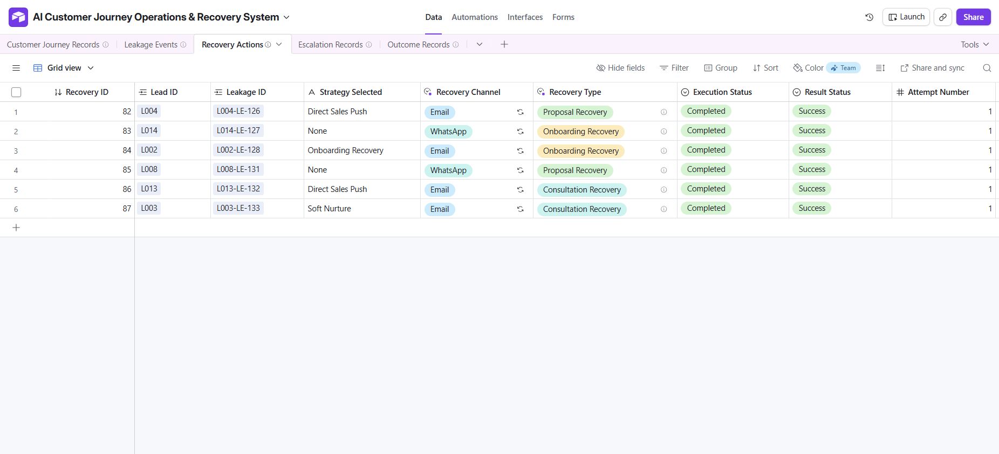
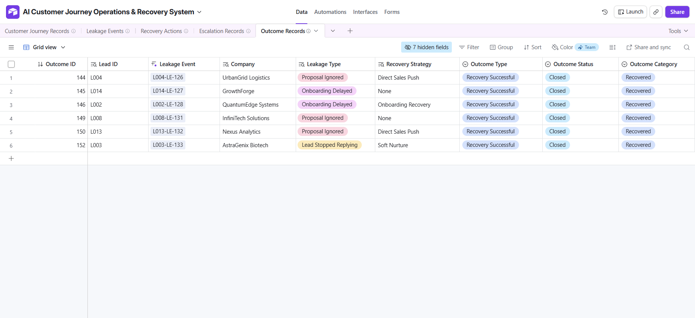

AI Customer Journey Operations & Recovery System
A multi-scenario operational architecture demonstrating how Make.com, relational Airtable records, and Make.com AI Agent modules can monitor lifecycle states, identify stalled opportunities, and route recovery actions.
The Mid-Funnel Journey Disconnect
In most B2B service firms, deals stall between consultation calls, proposal delivery, and contract signing. Because CRM updates depend on manual rep data entry, stalled accounts sit silently without detection until opportunities turn cold.
Deals languish in mid-pipeline stages with zero automated inactivity monitoring or SLA tracking.
Reps send generic check-ins rather than addressing specific stalled journey objections.
Operational Data Architecture & Lifecycle Framework
The system maps an end-to-end operational loop across 5 decoupled stages: Intake → Leakage Detection → AI Reasoning → Recovery Execution → Outcome Evaluation. Click the architecture diagram below to inspect the full data model:

Full vector diagram detailing multi-module orchestration, Make.com AI Agent prompts, and Airtable relational sync.
Complete schema detailing the 5 linked Airtable tables, field mappings, SLA inactivity timers, and recovery dispatch.
Intake Capture, Webhook Engine & Team Alerts
Real production assets showing how inbound leads are accepted via structured forms, processed through Make.com Scenario 00, and how internal team alerts are fired when an exception occurs:

Frontend intake form capturing customer milestones and project scope.

Make.com webhook listener mapping data to Airtable customer journey table.

Real-time internal team email with Make.com AI Agent recovery suggestions.
Multi-Scenario Module Proof Gallery
Each scenario operates as an independent, fault-tolerant module inside Make.com. Click any scenario below to inspect module logic, filters, and routing:


Periodically queries journey records for stalled stages exceeding defined SLA limits.

Feeds deal context into Make.com AI Agent to categorize recovery strategy.

Dispatches contextual follow-ups and creates task reminders.

Routes blocked journey exceptions to human leadership review.

Sends rich HTML notification emails to assigned account executives.

Logs recovery responses back into database, closing the operational loop.
Airtable 5-Table Relational Schema
The system relies on strict database governance across 5 linked tables. Click any database screenshot below to inspect field types, foreign keys, and status formulas:

Primary account records, milestones, and active journey health status.

Logs detected dormancy incidents, SLA timestamps, and severity levels.

Make.com AI Agent recovery strategies, outreach text, and action owners.

Exception table routing high-value stalled accounts to management.

Historical resolution audit logging client responses and deal recovery results.
30+ Page Architecture & Operations Case Study
The full downloadable case study document containing data dictionaries, scenario JSON structures, and complete operational governance documentation.
Need structured visibility across your pipeline?
I can design custom lifecycle tracking, database architectures, and automated triage workflows for your operations.